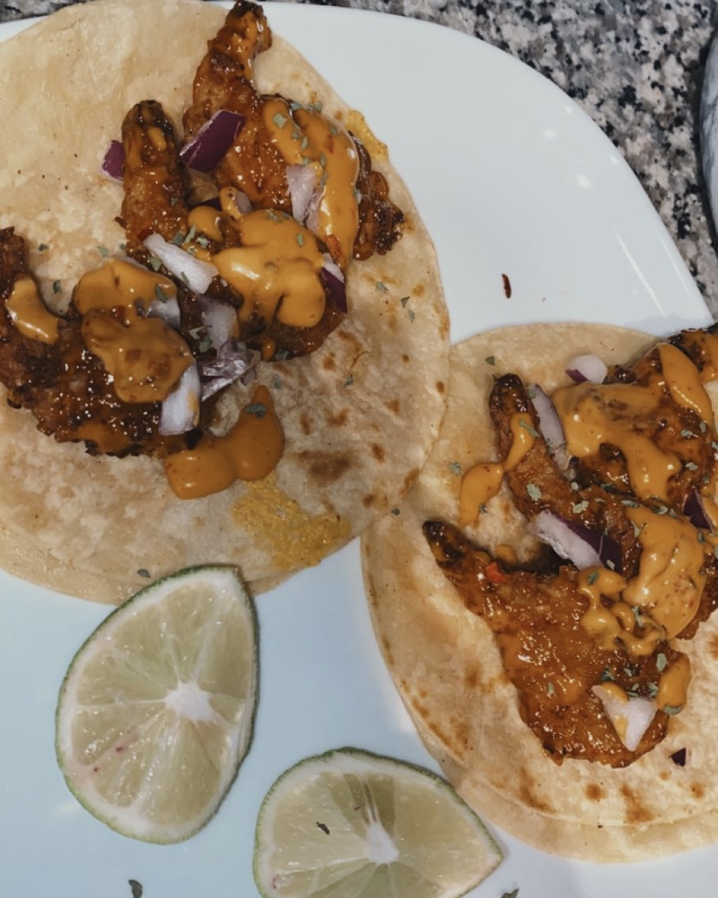
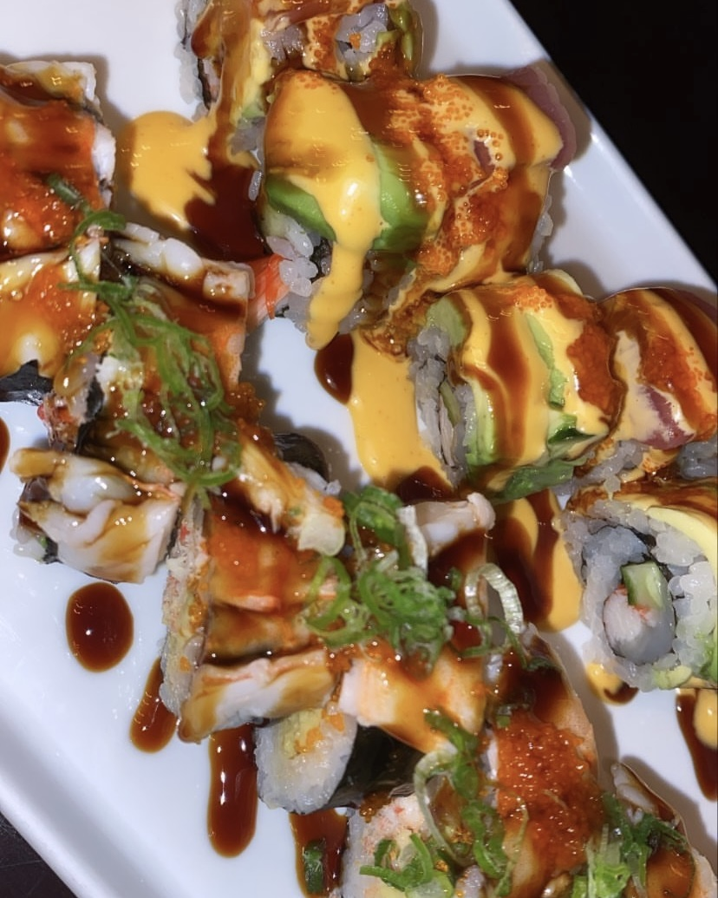
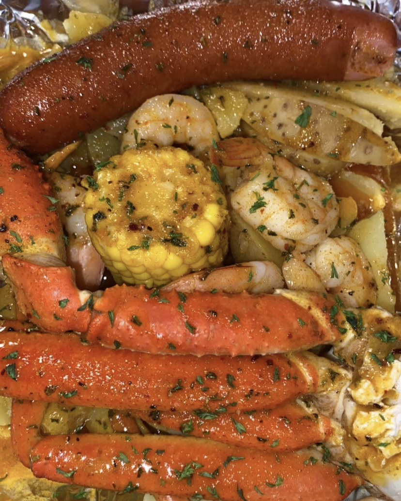
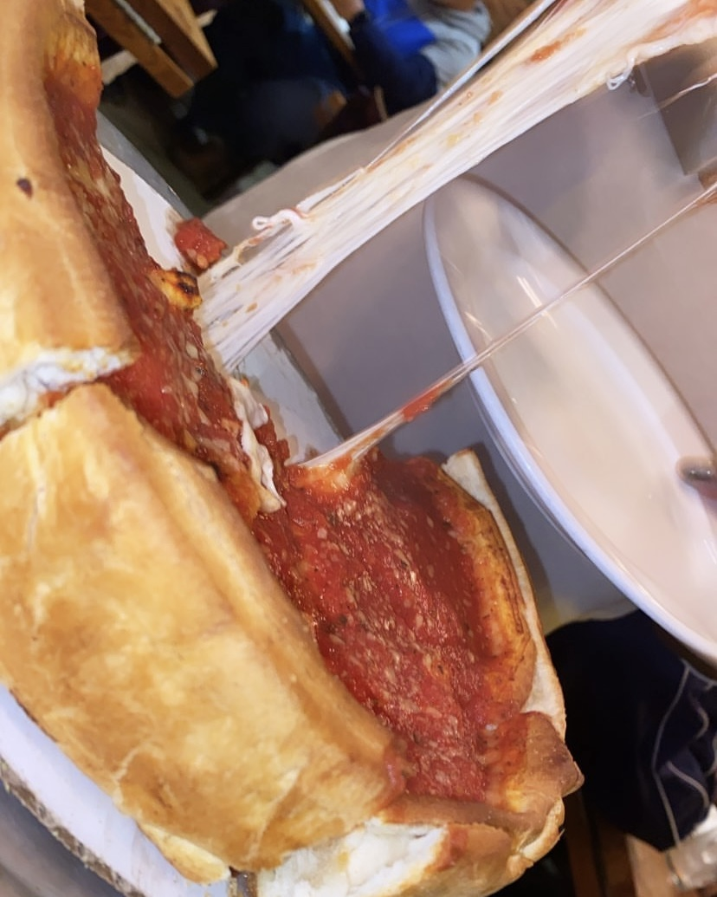
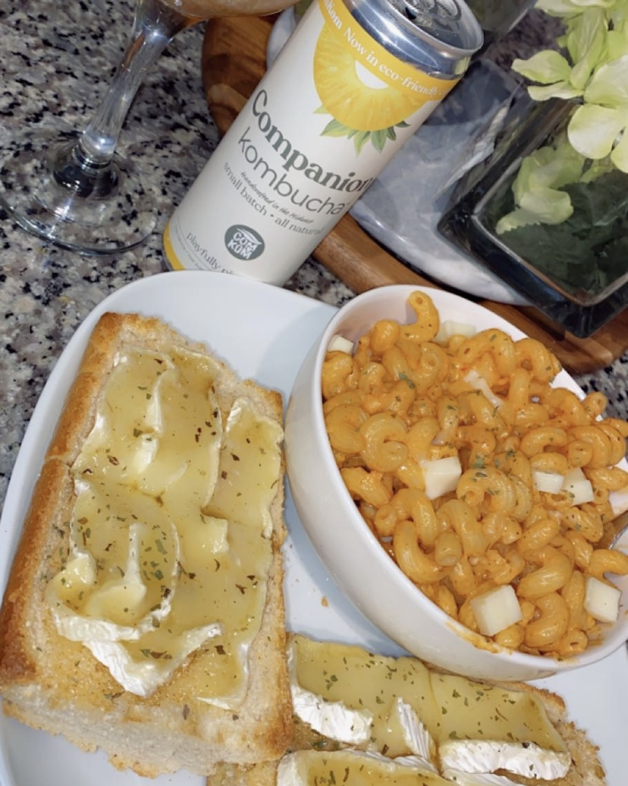

I put together five images from my favorite meals I’ve ever tried or made. I always love trying new food and cooking for my friends and family. Over quarantine I taught myself how to cook a lot of things from scratch. Ever since then, I’ve been learning more recipes and my friends are lucky because they get to taste test everything.

This is one of my favorite meals I’ve ever made and it’s one of my friends favorite meals I make for them! For my roommate’s birthday, she always request I make these bang bang shrimp tacos. .

This is when I first tried Kampai and it became one of my favorite sushi places in Columbia. Sushi is one of my favorite foods and I love trying new sushi places.

This is from when I made a crab boil from scratch for my friends and I. This took a bit of time, but it was really good.

This is from my first trip to Chicago and my first time trying deep dish pizza. Pizza is another one of my favorite foods and this pizza was so good.

This is when I made vodka sauce pasta and garlic brie bread. The bread was really good because I drizzled hot honey over it so it was savory and a bit sweet. Another one of my favorite meals I make.